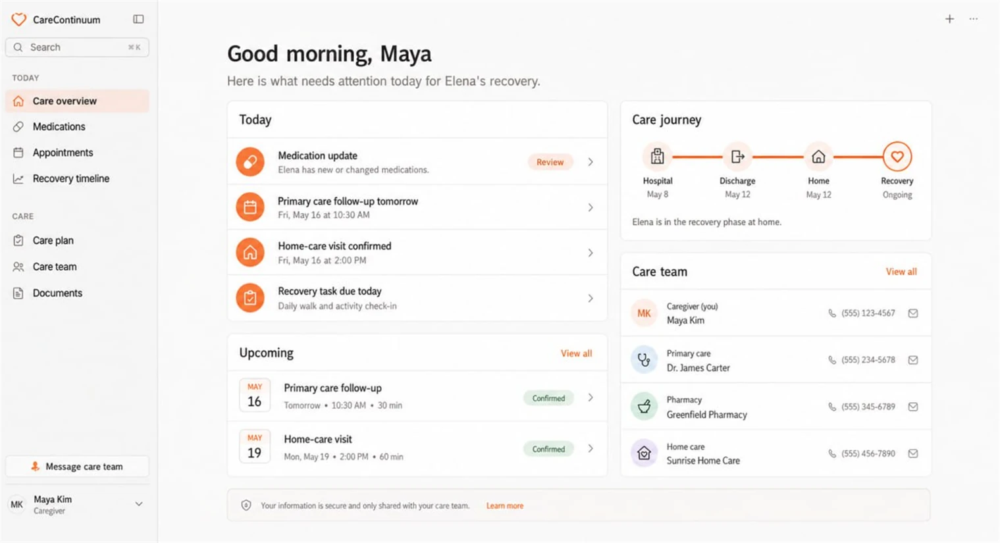

AI-assisted care coordination, from discharge through recovery.

The Care Journey
CareContinuum helps caregivers keep instructions, follow-ups, contacts, services, and family responsibilities connected as care moves beyond the hospital.
What CareContinuum Organizes
CareContinuum helps organize the instructions supplied at discharge so caregivers can see what matters now, what happens next, and where to find the original guidance.
Discharge_Care_Plan.pdf
Follow-up plan → Added
UpdatedCare contacts → Added
UpdatedHome-care instructions → Review
ReviewCaregiving responsibilities can be shared without relying on one person to remember every detail. Each person can see the plan, assigned responsibilities, and what has already been handled.
Notes
Home-care visit confirmed. Follow-up transportation arranged.
Responsibilities
Plan Update
Home-care instructions → Transportation confirmed
FlaggedCareContinuum brings upcoming responsibilities into one view, helping caregivers understand what is due, what is confirmed, and what comes next.
What needs attention today?
Result
View care planReview the discharge medication instructions, confirm tomorrow’s follow-up appointment, and check the home-care visit details.
Important information does not have to remain scattered across papers, calls, and notes. CareContinuum helps caregivers keep the supplied care plan and related details together.
Discharge_Care_Plan.pdf
4 sections organized
Caregivers can find relevant details without searching through every document, while care guidance and clinical judgment remain with healthcare professionals.
Who should I contact about the follow-up appointment?
The care plan lists these contacts:
Primary-care office
Follow-up and general care
Specialist clinic
Appointment questions
Home-care coordinator
Confirmed home visits
After discharge
Instructions, appointments, contacts, services, and family responsibilities may be spread across papers, portals, calls, calendars, and notes.
With CareContinuum
CareContinuum brings those responsibilities into one understandable path from discharge through recovery.
Across the Care Journey
Hospital · Primary care · Specialists · Pharmacy · Rehabilitation · Home care · Family
CareContinuum is being designed with assistive AI that helps caregivers organize and find information from the care plan. It does not act autonomously, make clinical decisions, or replace the caregiver or care team.
People stay in control
Caregivers decide what happens next
Professional guidance
Clinical judgment stays with the care team
Protected by design
Encryption and controlled access are core requirements
Help shape a clearer path from discharge through recovery.
Request Early Access